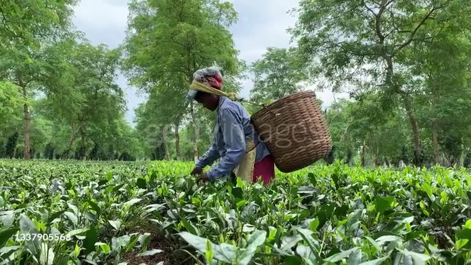
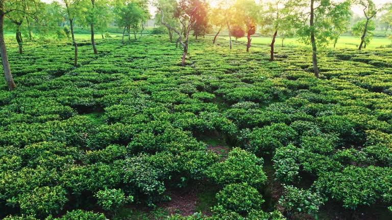

Build a cloud-free monthly view
Create median Sentinel-1 composites for each month from June to October 2025, plus a full-season composite, for all of Assam.

Reading the monsoon cropping season through clouds. A district-wise analysis of Sentinel-1 VV and VH backscatter across every district of Assam, June to October 2025.
Boundaries: Natural Earth (countries and Assam state). Final frame: the app's HYBRID basemap with the Assam boundary asset.
Create median Sentinel-1 composites for each month from June to October 2025, plus a full-season composite, for all of Assam.
Let anyone select a district, zoom to it and compare how its backscatter changes as the season moves from land preparation to maturity.
Plot mean backscatter for every acquisition date so the crop calendar shows up as a curve: the flooding dip, the growth rise and the plateau.
Use VV and VH behaviour to understand which signals separate rice, tea, forest and water, as a first step toward a trained crop-type map.

Calm water and freshly flooded paddies act like a mirror and send energy away from the satellite. In July they read as the darkest pixels. A district that darkens sharply from June to July is a strong sign of transplanted rice.
As rice tillers and canopy build up, the signal bounces around inside the leaves and stems, and cross-polarized VH climbs by several decibels from transplanting toward heading. That rise is the crop's growth curve.
Forest and tea canopies scatter strongly all season, so their curves are flat. Buildings reflect double-bounce energy and show as the brightest red. Flat, high curves mean the surface is not a seasonal crop.